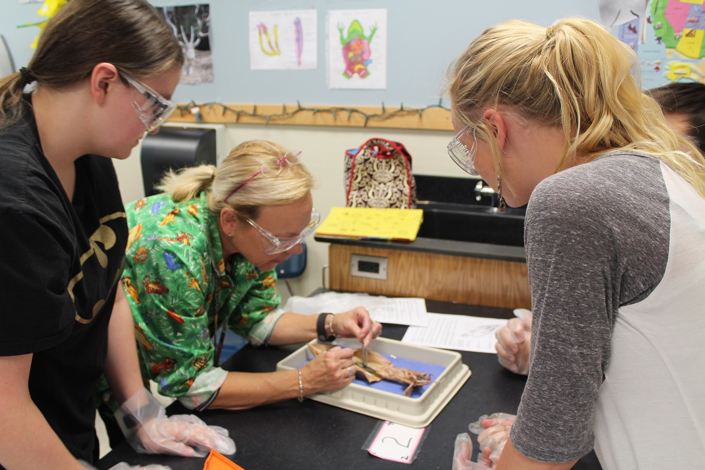
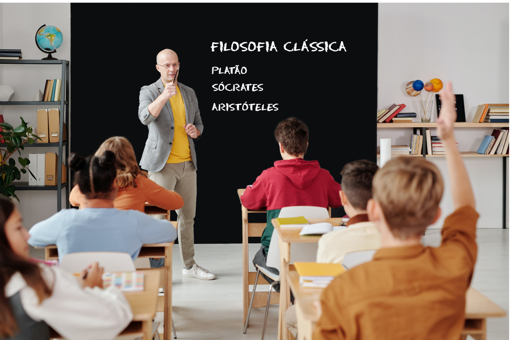
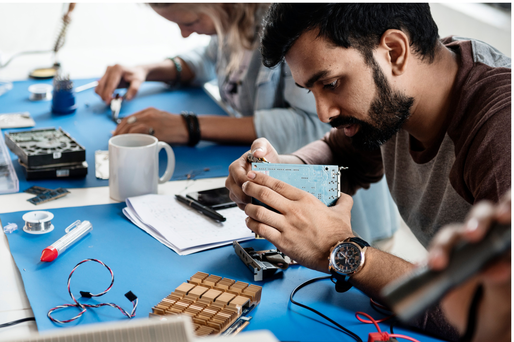

Com a promulgação da Lei 13.415 de 2017, que altera a LDB, o que muda para o Ensino Médio? Tudo! Mas vamos explicar por partes…
Há algumas décadas, o Ensino Médio no Brasil tinha quatro diferentes formações: Científico, Clássico, Técnico e Normal. Ao final do ensino ginasial, como eram chamadas as séries finais do Ensino Fundamental, o aluno poderia escolher uma das seguintes opções:
Abordava mais intensamente as ciências naturais: física, química, biologia além de um bom enfoque em matemática.
Figura 01 - Fonte: SchoolPRPro/Pixabay
Dedicava-se mais às humanidades e artes: filosofia, história, sociologia, língua e literatura.
Figura 02 - Fonte: Max Fischer/Pexels (editada pela produção do projeto)
Desdobrava-se em três grupos, segundo os três principais setores da economia à época: Agropecuária, Comércio e Indústria. Havia escolas agrotécnicas, escolas técnicas de comércio e escolas técnicas industriais. O Setor de comércio também incluía os serviços, por isso os cursos da saúde e do turismo faziam parte desse grupo.
Figura 03 - Fonte: RawPixel/Freepik
Tratava da formação de professores para o ensino primário que, na época, abrangia as quatro primeiras séries do Ensino Fundamental.
Figura 04 - Fonte: Tima Miroshnichenko/Pexels
Veja na linha do tempo a seguir as principais mudanças na estrutura do Ensino Médio.
Clique no ícone correspondente a cada década para ouvir o áudio: